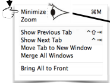
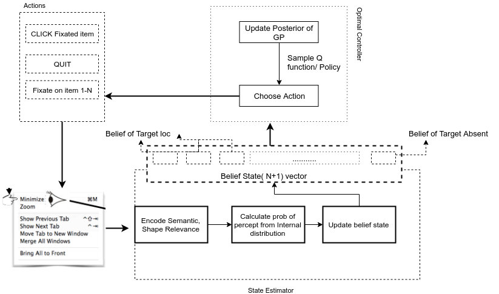
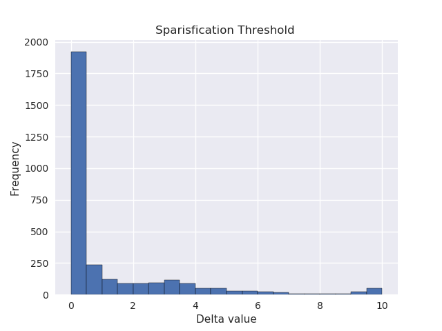
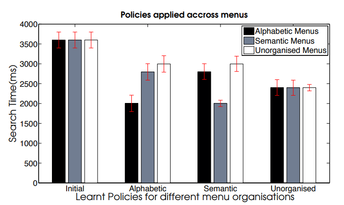
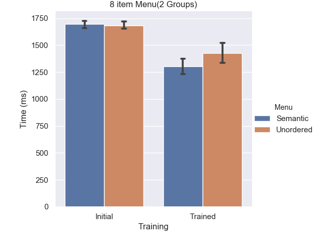
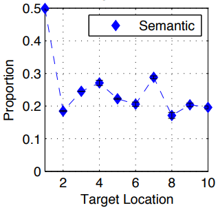
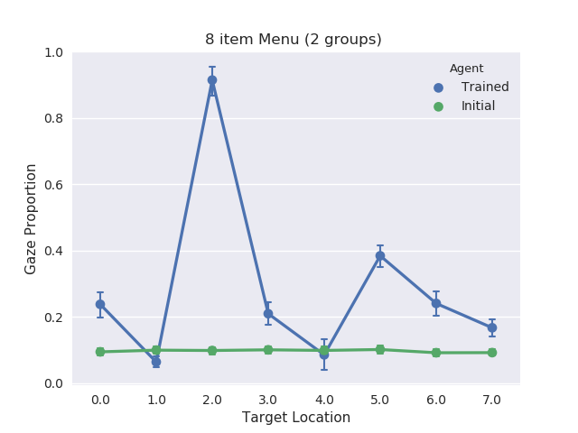
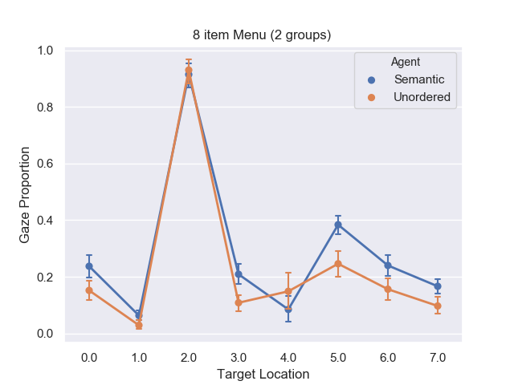

Part 2 : Cognitive Models for Visual Search
In Part 1 of this series, we discussed how simulating users behaviour would be the second step in the pipeline of building Adaptive Interfaces that personalise to user's needs. In this post, we would consider one such simulator model for the task of Visual Search in drop down Menus.
Let us start with an example where our goal is to build a UI targeted towards a particular demographic(say, Medicine/Health tracking app for Elderly). One way we could approach this problem is to conduct experiments and use the insights gained (avg response time for selection, visual acuity, readability preference etc) in our design choices(font, color, layout, shortcuts, input methods) to ease usage amongst that demographic. This works well, but is expensive and takes time to conduct individual experiments. To avoid or aid this process, developing simulated models that mimic users strategy have been an active area of research in HCI. Broadly such methods can be divided into three categories:
- Map based( Salience, activation)
- Bayesian MAP based
- Optimal Control based
In this post our subject of interest would be Optimal Control methods or Computationally rational models. They are based on the idea that user behaviour emerges to maximise underlying Utility under cognitive and perceptual limits. Thus the user strategy emerges as an optimal policy and hence it's called a Computationally rational model.

One such task which can be modeled as a rational behaviour is searching through a Menu to find a target item. Visual Search is something that we do hundreds of times a day and therefore is a necessary step in ultimately solving Visual Intelligence.
The idea of using Reinforcement learning to derive computationally rational strategies to solve a Visual Search task was introduced in this work. Chen X.,Bailly G., Brumby D., Oulasvirta A.,Howes A.The Emergence of Interactive Behaviour:A Model of Rational Menu Search,2015. The authors investigate the effect of Menu organization (Alphabetic,Semantic, Unordered) and Menu length on the emergent optimal strategy and compare the model predictions with empirical findings.
Our work on this model is a derivative of the aforementioned work in the following ways:
-
The model makes the same hypothesis of Optimal control that the authors investigated where the task of Menu Search is rationally adapted to Ecological structure of interaction(what agent observes the environment), Mechanism(how agent observes the environment: Perceptual limits,peripheral vision) and Utility( Maximizing speed and accuracy).
-
The model uses the same structure for Reward and Peripheral vision reported in the work where at each step the Time duration to take that step (fixation,saccade duration) is appended as a negative reward. Upon solving the task, the agent is highly rewarded or punished upon failure.
Our model is differentiated in the following ways:
- The observation model or the Ecology structure uses a Partially observed model where the user observes the Semantic and Shape relevance of the fixated item in the Menu and then samples the probability of it being a target from its internal belief distribution.
This allows us to parameterize the internal cognitive distribution of the User and can be used to model the very different behaviours observed in Expert vs Novice user for the same task.
An Expert user would have a belief distribution closer to the true distribution from which these relevances were sampled. The KL divergence between these two distributions could be used as a parameter to model User Expertise.
- Therefore now we can solve the PO-MDP as a continuous state MDP where the state is the user's current belief of the Target being present at that location in the Menu along with an additional belief of Target being absent.
With the state space now being continuous and hence having practically infinite states a tabular Q learning method such as the one used in the above paper wouldn't work without some sort of Function approximation. We used a Gaussian Process method GP-SARSA to approximate the Q function and make use of the covariance matrix to aid the agent's exploration strategy.
The advantage of using such Bayesian methods over currently popular Deep learning/Gradient based methods is that it allows us to encode the prior information from a HCI research perspective in a structured way. This is essential when we are trying to form a simulator model whose eventual aim is to be able to explain empirical findings.
For a complete study of the RL learner Gaussian Process-SARSA there would be another post in the "Reproducibility in Machine Learning" series where I would reproduce the experiments of the original work on a Maze environment.
Model Overview

The two versions of the GP-SARSA learner were implemented with sparse and non sparse dictionary. In the sparsified version, a threshold (hyperparameter) determines which state transitions or steps would be used as data points to fit our Gaussian prior. This reduces the execution time of the algorithm from O(t3) to O(tm2) where t=total transitions and m=data points in dictionary. The ratio of 'm' to 't' is controlled by threshold parameter.
To get a starting point regarding the setting of this threshold i plotted the distribution of the values that this threshold controls(delta). 
With experiments, i observed that a value of 0.5 works best. A higher value excludes a lot of potentially important transitions and a lower value has repetitive transitions with not much entropy.
Policy
The learner was trained with the following action selection policies:
- Epsilon-Greedy: Standard policy used in RL where value of Epsilon controls the exploitation-exploration trade-off. High value of epsilon leads to more exploration.
- Active learning based on Covariance: Here we use the covariance matrix of the Q function Gaussian Process and explore the actions which have currently high uncertainty in their Q values(Expected payoff). Thus we would take,
- Action with highest mean with 1-Eps probability
- Action with highest uncertainty with Epsilon prob.
Since the covariance of these State-Action values update as the agent learns, its called an Active learning approach.
- Stochastic Learning : Here a parameter called Covariance Scale is used which controls the spread of the Q value distribution. The action selection rule is defined as:
Action(s) = argmaxa{Q'(s, a):a ∈ Ao}
where,Q'(s,a) denotes a sample: Q'(s, a) ∼ N (Q(s, a),η2cov((s, a),(s, a)))
and η2=Covariance Scale
As iterated in the original literature on GP-SARSA, this policy provides faster convergence but sometimes leads to a sub-optimal policy. This could be explained from the fact that the way this policy handles exploration is by randomly trying Actions with overlapping distribution. In our case the distribution of Click/Quit Actions varies significantly from Fixation Actions and hence this policy inhibits exploring those actions in initial training and thus leads to a policy where a lot of fixations are done before selection.
With our experiments we observed that Active learning led to a better policy.
Experiments
In the aforementioned work, authors conducted experiments to measure Selection time in the Visual Search task to measure how a learner trained on one type of Menu performs across other menus.(on which it was not trained). The Selection time is made up of the time to fixate on an item and saccade duration. Their model corroborated what they observed in empirical data that Alphabetic menu layout is the most efficient in terms of selection time. In the results below, a comparison between Semantic and Unordered layout is done(Alphabetic to follow). The policy is trained on Semantically organised Menu items and the agent's selection time and Gaze proportion is evaluated on Semantic and Unordered Menus.
Selection Time:
We compare the Selection Times of our learner with the results in the above work.

The above plot shows the Selection Time for the visual search task in a 10 item Menu. The agent's performance was recorded before and after training on Alphabetic, Semantic and Unordered Menus. For semantically trained learners, the mean selection time is 2000 ms and avg steps ~ 4.6 (~ 437ms per fixation) before making a selection.
We demonstrate a similar plot for the learner's performance before and after training where it's trained on a Semantically organised Menu and its selection time is compared to its performance on an Unordered Menu(more comprehensive evaluation across menus to follow). For our experiments we used a 8 item Menu grouped in 2 and it took on an avg~ 2.8 steps to successful selection in a Semantic Menu.

Gaze Proportion
Analyzing the gaze distribution of the user when it's interacting with an Interface is a key to building personalised adaptive UIs. We looked in Part 1 of this series how UI designers are interested in knowing about user's behavior(through mouse movements or gaze) when interacting with their product and thus Gaze Analytics as a Service has become an essential tool for them.(Heat Map Inc sells such analytics services as Javascript wrappers)
Continuing in similar fashion ,we take a look at the Gaze proportions on the Target item while navigating the Menu, first from the Chen et.al,2015 and then our experiments.

Down below, are the plots for Gaze proportions in the learned policies trained on Semantic Menus compared with Unordered Menu and Initial untrained learner.

Here we can see that an untrained agent, distributes the gaze evenly among all target items while the trained policy has learnt to focus on specific items in the menu while looking for target.
The reason for such high gaze proportion when the Target is at 3(0 indexed x axis) is because the policy learnt to fixate on Item 3 as the first action to be taken for each episode, as it allows the agent to encode the semantic relevances of both groups in the menu through peripheral vision (encode info of one item above and down from fixation location) and update the belief state.

Conclusion
The work in Chen et. al,2015 assumes a fully observable and deterministic Ecology structure where the user knows exactly the relevances of the menu items. This is what our model would formulate as Expert behaviour in terms of observation mechanism. The inclusion of a internal belief distribution whose divergence from this expert true distribution could be used to model the "Familiarity" or "proficiency" of the user in this task.
A user who shows a different mental ability(people with special needs) or cognitive load while doing such tasks would have a different observed behaviour(in terms of selection time/utility) and thus may not fit this model. What our model attempts is to encode such Proficiency as a parameter and also makes it easy to introduce other perceptual signals(apart from semantic and shape) without changing the learner or the environment structure.
In part 1 of this series I have written about how personalization in Streaming,E-commerce and Advertisements has helped us build better products. I believe Interfaces that adapt and change according to the cognitive skills of the user are the next step to building better software.
The other features of this model are scalablity and dealing with observation noise. A tabular Q learner such as one used in the paper suffers from curse of dimensionality as we scale the state-action space, while this continuous model would be better suited to encode further perceptual information and corresponding noise.
In part 3 of this HCI series we would investigate how Likelihood-free inference methods(Approximate Bayesian Computation) could be used to deduce parameters of this model in a inverse learning type paradigm.